Trong thiết kế kết cấu thép nhà công nghiệp và nhà cao tầng, hệ giằng (bracing system) đóng vai trò quyết định chịu lực ngang (gió, động đất, cầu trục). Việc liên kết hệ giằng vào dầm, cột chính sao cho vừa đảm bảo khả năng truyền lực, vừa tối ưu chi phí vật liệu và lắp dựng luôn là bài toán đau đầu của kỹ sư detailer. Bolted gusset (11) chính là "vũ khí hạng nặng" trong hệ thống thư viện liên kết của Tekla Structures giúp giải quyết bài toán này một cách tự động, chính xác và linh hoạt nhất.
Bài viết này được biên soạn bởi iViDLab Team dựa trên tài liệu chuẩn hóa TS_COMP_2025_en_System components.pdf giúp bạn hiểu sâu sắc nguyên lý hoạt động, các trường hợp ứng dụng thực tế và cách thiết lập các thông số nâng cao của liên kết này.
1. Tổng quan về liên kết Bolted gusset (11)
Liên kết Bolted gusset (11) dùng để liên kết từ 1 đến 10 thanh giằng (braces) vào một cấu kiện chính (dầm hoặc cột) thông qua một bản mã chung (gusset plate).
- Bản mã chính (Gusset plate) được bắt bu lông hoặc hàn vào cấu kiện dầm/cột chính.
- Các thanh giằng (Braces) được xẻ rãnh hoặc ép phẳng và bắt bu lông trực tiếp vào bản mã chính.
- Tùy chọn tạo thêm thép góc liên kết (clip angles) ở đầu các thanh giằng hoặc hai bên bản mã để tăng khả năng chống cắt/chịu kéo dọc.
Hệ thống sẽ tự động tạo ra toàn bộ các cấu kiện phụ bao gồm: Bản mã (Gusset plate), Thép góc liên kết (Clip angle / Shear tab), Bản mã liên kết phụ (Connection plates), Bản bịt đầu thanh giằng ống (Seal plates), Bản gia cường dầm/cột (Stiffeners), hệ bu lông, đường hàn và các đường khuyết cắt thép.
2. Thứ tự chọn cấu kiện khi thao tác (Selection Order)
Quy trình thực hiện cuộc gọi cấu kiện vô cùng quan trọng. Để liên kết được sinh ra chính xác không bị ngược hoặc lệch trục, bạn hãy tuân thủ trình tự sau:
2. Chọn thanh giằng phụ thứ nhất (First brace)
3. Chọn thanh giằng phụ thứ hai (Second brace)
4. Chọn các thanh giằng tiếp theo (Tối đa lên đến 10 giằng)
5. Nhấn nút chuột giữa (Middle mouse button) để kết thúc và kích hoạt dựng hình.
3. Các trường hợp ứng dụng thực tế (Use Cases & Situations)
Bolted gusset (11) hỗ trợ hầu như mọi định dạng tiết diện giằng trên thực tế: Thép hộp rỗng (RHS/HSS), thép ống tròn (Tube), thép góc đơn/kép (L), thép chữ T (WT), thép hình chữ I...
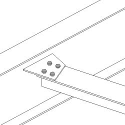
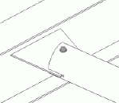
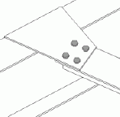
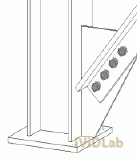
Đặc biệt, trong các kết cấu cột hộp rỗng (HSS columns), bản mã liên kết có thể cấu hình cắt xuyên qua thân cột (runs through the column) để liên kết giằng tại bản đế chân cột (base plate) vô cùng mạnh mẽ.
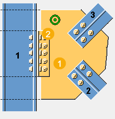
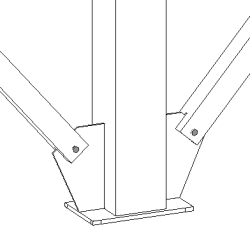
4. Hướng dẫn chi tiết thiết lập thông số các Tab
4.1. Tab Picture (Kích thước hình học & Vị trí)
Tab này điều khiển hình dáng bản mã và khoảng cách tương đối giữa các cấu kiện.
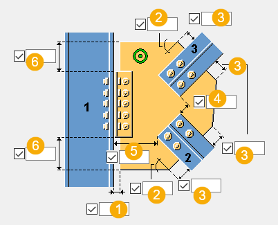
- (1) Gap distance: Khoảng hở giữa mép bản mã và bề mặt dầm/cột chính.
- (2) Corner angle: Góc nghiêng vát cạnh bản mã (độ).
- (3) Edge length: Chiều dài cạnh vát bản mã.
- (4) Distance between braces: Khoảng cách khe hở giữa các thanh giằng giao nhau.
- (5) Distance to brace: Khoảng hở từ dầm/cột đến đầu thanh giằng.
- (6) Offset: Khoảng cách từ mép thép góc/bản mã đệm đến mép bản mã chính.
4.2. Tab Gusset (Bản mã & Kiểu liên kết dầm/cột)
Định cấu hình chiều dày bản mã, thép góc liên kết (L profile) và cách thức bắt vào dầm/cột:
- Welded directly: Bản mã hàn trực tiếp vào dầm/cột chính (không cần cấu kiện liên kết trung gian).
- Connected with clip angles: Tạo thép góc (clip angle) bắt bu lông/hàn bản mã vào dầm/cột. Bạn có thể chọn đặt thép góc ở một bên hoặc cả hai bên bản mã chính.
- Connected with connection plate: Sử dụng tấm liên kết đệm phẳng bắt bu lông vào dầm/cột chính.
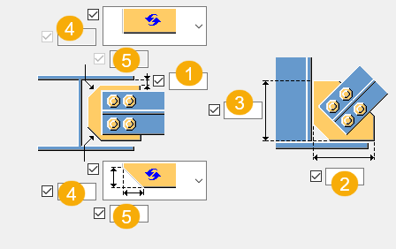
Mục Gusset plate chamfer cho phép cài đặt vát góc bản mã tránh va chạm cánh dầm:
- (1) Khoảng cách từ tấm liên kết phụ tới cánh trong dầm/cột.
- (2), (3) Kích thước khe hở ngang/dọc tới bản cánh dầm/cột.
- (4), (5) Chiều ngang và chiều dọc góc vát bản mã chính.
4.3. Tab Brace conn (Xẻ rãnh giằng & Tấm bịt đầu)
Khi sử dụng thanh giằng rỗng dạng hộp hoặc tròn, bạn bắt buộc phải xẻ đầu thanh giằng (notching/slotting) để đút lọt tấm bản mã chính qua. Tab này hỗ trợ:
- Thiết lập chiều sâu xẻ rãnh dọc (1), độ mở rộng khe ngang (2) và góc ngàm vát (3).
- Hỗ trợ bo tròn góc rãnh xẻ (Rounded notch) kèm bán kính bo để tránh nứt gãy mỏi vật liệu khi chịu tải lực biến động.
- Bố trí tấm bịt đầu (Seal plate) ngăn nước, ẩm xâm nhập rỉ sét bên trong giằng.
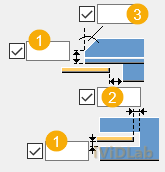
4.4. Tab Stiffeners (Tấm gia cường dầm/cột)
Thiết lập các tấm sườn gia cường bản bụng dầm/cột tại vị trí bản mã truyền lực vào:
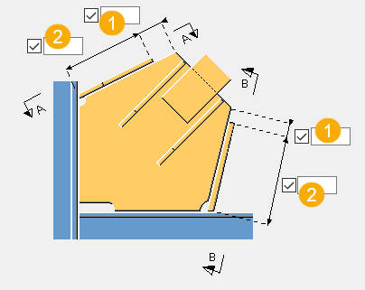
- Cài đặt chiều dày sườn sấn giằng (Stiffener 1, 2).
- Stiffener length (1) & (2): Khoảng cách biên sườn đến mép bản mã và tổng chiều dài sườn gia cường.
- Chọn kiểu vát góc sườn (Straight line, Convex/Concave arc).
4.5. Tab Gusset bolts (Bu lông liên kết vào cột/dầm)
Quản lý nhóm bu lông trên bản mã hoặc thép góc liên kết nối vào cấu kiện chính:
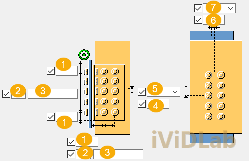
- (1) Bolt edge distance: Khoảng cách từ tâm bu lông biên đến mép bản mã.
- (2) Number of bolts: Số lượng hàng bu lông.
- (3) Bolt spacing: Khoảng cách bước bu lông (ví dụ: `80 80` để định nghĩa 3 bu lông cách nhau 80mm).
- Hỗ trợ xếp bu lông so le (Staggered) 4 kiểu để tối ưu hóa sự phân bố bu lông chịu kéo/cắt.
4.6. Tab Brace bolts 1 / 2 / 3 (Bu lông thanh giằng riêng biệt)
Đặc quyền mạnh mẽ của Bolted gusset (11) là cho phép bạn tùy chỉnh nhóm bu lông riêng biệt cho thanh giằng 1, thanh giằng 2, và các thanh giằng tiếp theo trên các tab Brace bolts tương ứng.
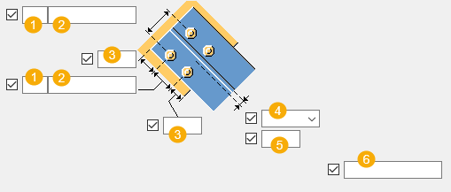
- Thiết lập bước bu lông, khoảng cách biên giằng và số lượng bu lông.
- Deleted bolts (6): Cho phép bạn xóa bỏ bu lông bất kỳ bằng cách điền số thứ tự của bu lông trong nhóm (nhập số cách nhau bởi dấu cách).
- Tùy chọn tạo **lỗ oval (slotted holes)** để tạo dung sai lắp ghép hiện trường dễ dàng: chọn Hole type là *Slotted*, nhập kích thước lỗ oval chiều dọc/ngang và hướng xoay của lỗ oval (Rotate Slots).
4.7. Tab Angle bolts (Bu lông trên thép góc phụ)
Cài đặt nhóm bu lông bắt trên thép góc liên kết dọc theo chiều dầm/cột chính:
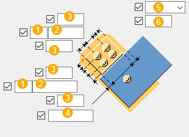
- Cài đặt số lượng bu lông **(1)**, bước bu lông **(2)**, khoảng cách biên thép góc **(3)** và khoảng cách thép góc tới thanh giằng **(4)**.
5. Mẹo tối ưu hóa thiết kế trong thực tế (Tips & Tricks)
- Tận dụng AutoDefaults: Cấu kiện số 11 liên kết chặt chẽ với tệp cấu hình hệ thống `joints.def`. Bạn có thể để trống các ô kích thước bu lông và chiều dày bản mã chính để Tekla tự động tính toán kích thước an toàn nhất dựa trên cường độ vật liệu dầm/cột đầu vào.
- Trình tự chọn quyết định vị trí tối ưu: Khi bật tính năng *Optimize gusset plate weight* trên tab Gusset, thanh giằng được quét chọn đầu tiên trong mô hình sẽ được kéo sát cấu kiện chính nhất, giúp thu hẹp tiết diện bản mã tối đa, giảm khối lượng thép thừa.
- Giải pháp dung sai hiện trường: Luôn sử dụng tùy chọn lỗ oval (Slotted holes) tại đầu các thanh giằng. Điều này sẽ giúp công nhân ngoài công trường lắp ráp bu lông cực kỳ dễ dàng mà không bị kẹt khi hệ khung chính có sai số chế tạo nhỏ.
Hi vọng bài viết hướng dẫn chuyên sâu này của iViDLab sẽ là cẩm nang hữu ích giúp bạn hoàn toàn làm chủ cấu kiện **Bolted gusset (11)** trong công tác thiết kế chi tiết kết cấu thép Zamil và nhà công nghiệp nhịp lớn!
In structural steel design for industrial and high-rise buildings, the bracing system plays a decisive role in resisting lateral loads (wind, seismic, cranes). Connecting the bracing system to main beams and columns while ensuring efficient load transfer, cost-optimized materials, and smooth erection is always a detailing challenge. Bolted gusset (11) is the ultimate "heavy weapon" in the Tekla Structures system connection catalog, designed to solve this task automatically, precisely, and highly flexibly.
This comprehensive guide is prepared by the iViDLab Team based on the standardized TS_COMP_2025_en_System components.pdf reference manual, giving you a deep dive into its mechanics, practical use cases, and advanced parameter setups.
1. Overview of Bolted gusset (11) Connection
The Bolted gusset (11) system component connects **1 to 10 braces** to a single main part (beam or column) using a shared gusset plate.
- The **Gusset plate** is bolted or welded directly to the main beam or column.
- The **Braces** are slotted or flattened and bolted directly onto the gusset plate.
- Optional **clip angles** can be created at the ends of the braces or on each side of the gusset plate to increase shear and tension capacity.
The component automatically generates all required detailing parts: Gusset plates, Clip angles/Shear tabs, Connection plates, Seal plates (for hollow/tube braces), Stiffeners, bolt groups, welds, and cut-outs.
2. Selection Order (Picking Coordinates)
The picking order of elements is critical. To ensure the connection is correctly aligned along the workplane without being reversed, strictly follow this sequence:
2. Select the first secondary part (First brace)
3. Select the second secondary part (Second brace)
4. Select subsequent secondary parts (Up to 10 braces in total)
5. Click the middle mouse button to commit and generate the connection.
3. Practical Use Cases & Situations
Bolted gusset (11) supports almost all industry-standard brace profiles: Hollow Structural Sections (RHS/HSS), circular tubes (CHS), single/twin angle bars (L), structural tees (WT), and wide-flange I-sections.
Notably, for HSS hollow section columns, the gusset plate can be configured to **run through the column** (passing completely through) to connect bracing at the base plate level, providing exceptionally robust load-bearing nodes.
4. Detailed Configuration Tabs & Parameters
4.1. Picture Tab (Geometry & Positioning)
Controls the shape of the gusset plate and relative clearances between parts.
- (1) Gap distance: The gap clearance between the gusset plate edge and the main part.
- (2) Corner angle: The slope angle of the gusset plate corner (in degrees).
- (3) Edge length: Defines the length of the skewed edge on the gusset plate.
- (4) Distance between braces: Clear distance between crossing bracing elements.
- (5) Distance to brace: Distance from the main part center/edge to the end of the brace.
- (6) Offset: Distance from the clip angle/connection plate edge to the gusset plate edge.
4.2. Gusset Tab (Plate and Connection Types)
Sets thicknesses of plates, clip angle profile catalog entries (L profile), and beam/column attachment methods:
- Welded directly: The gusset plate is welded directly to the main column/beam web or flange.
- Connected with clip angles: Installs clip angles to bolt or weld the gusset to the main part. Available as single-sided (Left/Right) or double-sided.
- Connected with connection plate: Uses a flat splice/connection plate bolted to the main part.
The **Gusset plate chamfer** parameters allow fine-tuning the plate profile to clear column/beam flanges:
- (1) Clearance distance from the connection plate to the inner flange.
- (2), (3) Horizontal/vertical clearance to the main flange.
- (4), (5) Horizontal and vertical dimensions of the gusset plate corner chamfer.
4.3. Brace Conn Tab (Notches, Slots & Seal Plates)
When using hollow section braces, you must slot (notch) the ends of the braces to let the gusset plate pass through. This tab defines:
- Vertical notch depth **(1)**, horizontal slot opening **(2)**, and skewed notch angle **(3)**.
- Allows bo-rounded corner slots (Rounded notch) with custom radii to avoid high fatigue stress concentration.
- Option to add a Seal plate to weld and seal the hollow tubes against water ingress and internal corrosion.
4.4. Stiffeners Tab (Main Part Reinforcements)
Defines column/beam web stiffeners placed at high-stress force entry locations:
- Thickness of stiffeners (Stiffener 1, 2).
- Stiffener length (1) & (2): Gap from stiffener edge to gusset edge, and total stiffener length.
- Selects the chamfer style (Straight line, Convex/Concave arc).
4.5. Gusset Bolts Tab (Main Part Connection Bolts)
Controls the bolt groups connecting the gusset plate or clip angles to the column/beam:
- (1) Bolt edge distance: Gap from bolt center to the outer edge of the plate.
- (2) Number of bolts: Column row count of bolts.
- (3) Bolt spacing: Steps between bolts (e.g., `80 80` for 3 bolts spaced 80mm apart).
- Supports bolt staggering (Staggered Type 1 to 4) to optimize block shear resistance.
4.6. Brace Bolts 1 / 2 / 3 Tabs (Individual Bracing Bolt Groups)
A very powerful aspect of Bolted gusset (11) is the ability to configure independent bolt group settings for brace 1, brace 2, and brace 3 separately on their respective tabs.
- Sets bolt pitch spacing, edge distances, and column counts.
- Deleted bolts (6): Exclude individual bolts by entering their sequence number in the group (separated by space).
- Supports **Slotted holes** for field erection adjustments: change Hole type to *Slotted*, specify vertical/horizontal slotted slot sizes, and rotate the slot orientation (Rotate Slots).
4.7. Angle Bolts Tab (Clip Angle Bolts)
Governs bolt dimensions and pitch values for the connection angles:
- Defines bolt counts **(1)**, spacings **(2)**, edge distance **(3)**, and angle-to-brace clearance **(4)**.
5. Expert Erection and Design Tips (Tips & Tricks)
- Utilize AutoDefaults: Component 11 interacts seamlessly with the system `joints.def` file. You can leave bolt sizes and plate thicknesses empty to let Tekla automatically calculate safe designs based on active project materials.
- Picking Sequence Matters: When enabling *Optimize gusset plate weight* on the Gusset tab, the first brace selected during coordinate picking will be placed closest to the beam/column. This shrinks the overall gusset area, reducing raw steel weight.
- Site Tolerance Adjustments: Always use slotted holes at brace-to-gusset interfaces. This guarantees site erection crews can easily bolt elements together without getting stuck due to manufacturing tolerances or frame offsets.
We hope this comprehensive detailing guide from **iViDLab** acts as a valuable resource to help you fully master the **Bolted gusset (11)** connection in your large-span steel frame detailing projects!